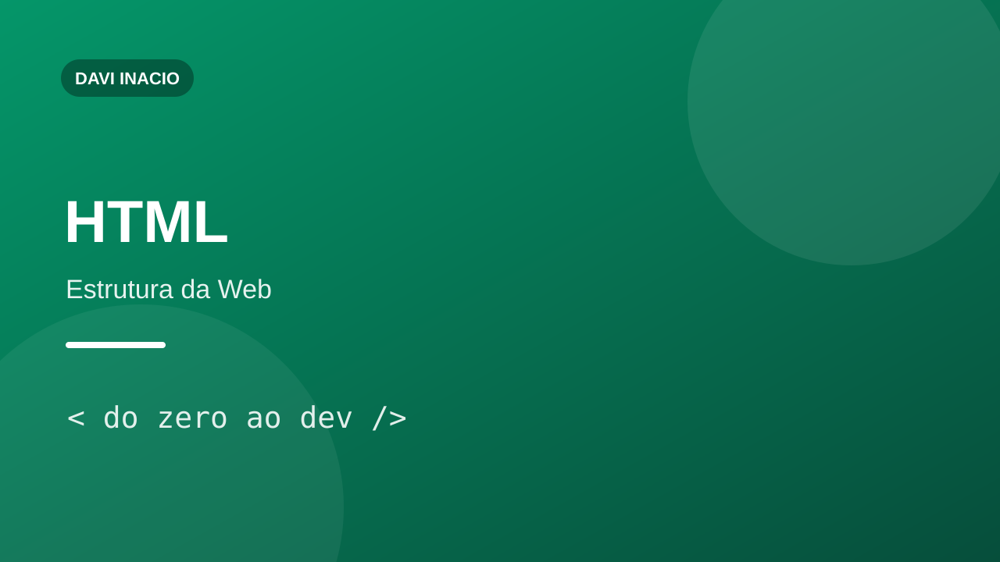
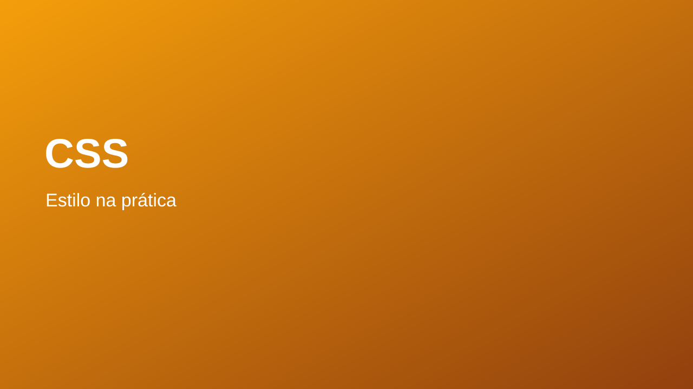
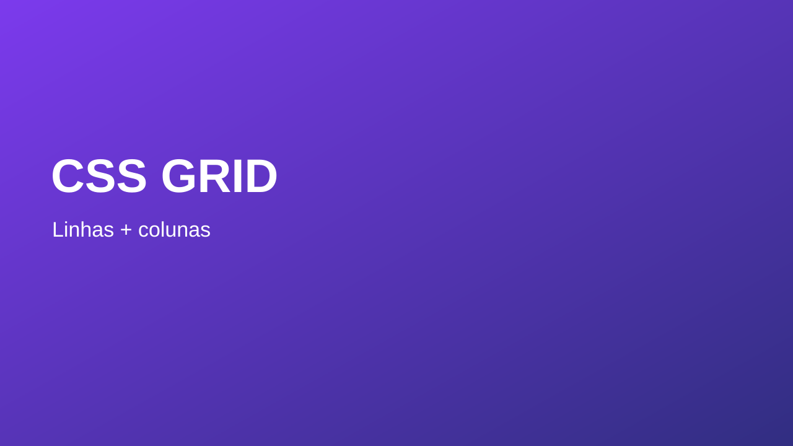
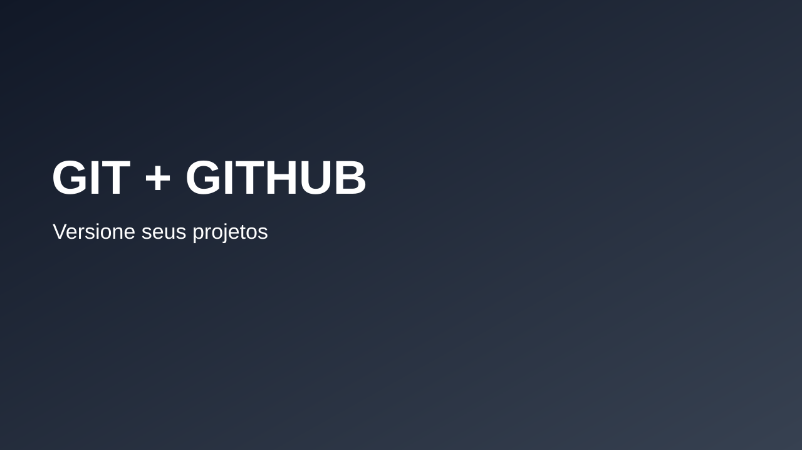
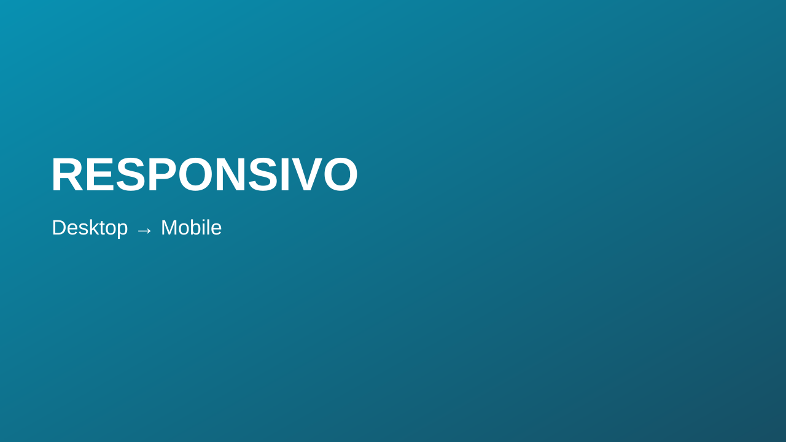

12:48DIHTML do zero: entendendo a estrutura de uma páginaDavi Inacio Dev2,1 mil visualizações • há 3 dias
18:20DICSS na prática: seletores, cores e espaçamentosDavi Inacio Dev1,8 mil visualizações • há 5 dias
22:15DICSS Grid: criando layouts em linhas e colunasDavi Inacio Dev3,4 mil visualizações • há 1 semana
16:03DIFlexbox sem mistério: alinhamento passo a passoDavi Inacio Dev1,2 mil visualizações • há 1 semana
14:39DIGit e GitHub para quem está começandoDavi Inacio Dev980 visualizações • há 2 semanas
25:10DIJavaScript: variáveis, tipos e primeiros exercíciosDavi Inacio Dev4,7 mil visualizações • há 2 semanas
19:42DIResponsividade: fazendo o site funcionar no celularDavi Inacio Dev2,6 mil visualizações • há 3 semanas
11:58DIComo organizar seu primeiro portfólio Front-endDavi Inacio Dev1,5 mil visualizações • há 3 semanas
15:27DIRoteiro de estudos para sua primeira vaga Front-endDavi Inacio Dev6,1 mil visualizações • há 1 mês